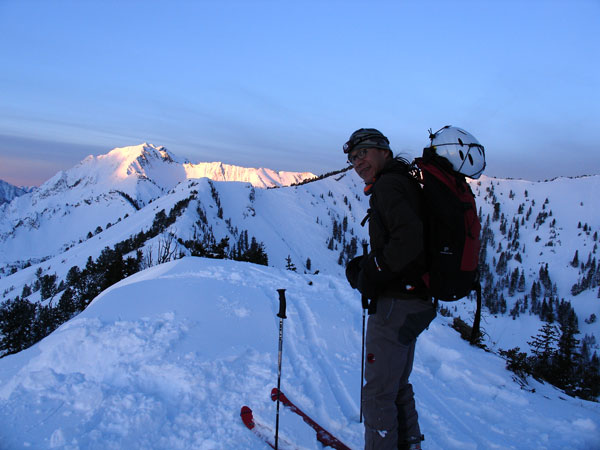
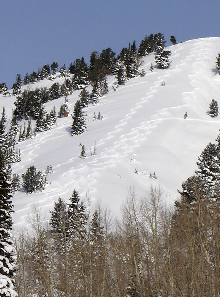

December 8th, 2005 Emma Ridge Dawn Patrol
 Dr. Fu trying to feel his toes as the sun comes up on cardiac ridge.
Not sure why this guy is smiling...
 Some of our turns, and some really bad ones made by a knuckel Dragger that poached us.